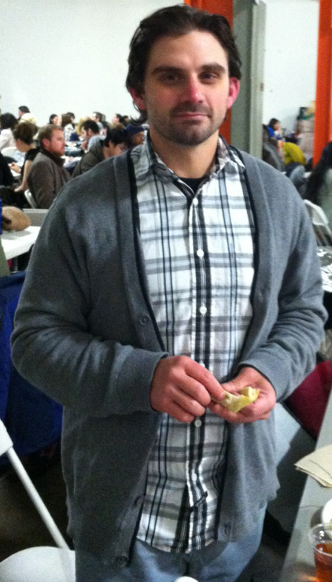

About Andrew
As a Digital Media Designer and Developer, Andrew has had the opportunity to learn many different workflows, many different types of design and development and many different technologies. Andrew is primarily focusing on code in the form of HTML/HTML5 markup, CSS/CSS3 style sheets and Javascript/jQuery interactive programming. This doesn't mean that he is looking to leave the rest of the skills he has developed behind however.
With a BFA in Graphic Design and over 7 years of professional digital experience, Andrew is at an expert level in Adobe programs such as Photoshop, Illustrator, InDesign, Premiere Pro and After Effects. Creating logo, icons, banners, and digital & print layouts for EPKs, site mockups and more-- Andrew has learned the true power of leveraging several tools, such as Adobe programs, at once to create professional designed products.
Directing films is a passion Andrew has pursued in the form of school while completing a Master's Degree in Communication Arts and professionally. Andrew has had the privilege to work on professional sets as a grip, a production assistant as well as direct, produce, shoot and edit several of his own documentary style films, both for fun and for profit
As an imaging enthusiast and professional, it is only natural that he also has a deep passion for photography. Andrew has amassed a large collection of low light, long shutter painting with lights photographs, to which he has attributed a theme of the graphing and visual representation of ideation and is in the process of producing a publishable body of work for.
Aside from all of this, Andrew loves to write. It started with poetry and quickly evolved to short stories. Though his work has seen many genres, he has found he is best suited for science fiction and he is developing several short stories for publishing and perhaps adaptation to film. Andrew has also written several narrative film scripts and has begun adapting his short story ideas for film refactoring.
As someone that has always been driven by psychology and philosophy or the underlying meanings, purposes and causes of things, Andrew also spends alot of time reading and researching about topics such as Human-Computer Interaction (HCI) Information Architecture (IA), and User Experience(UX). He has had the opportunity to use some of his knowledge of UX best practices in client and employer projects and finds great value in the iterative, research based process--Andrew finds that it is the best way to create unique digital products that deliver a special voice and interacts with viewers that come away with a feeling that they are understood by the design.
Andrew has also spent many hours studying and practicing the arts of storytelling. He sees great opportunity in creating long form content marketing videos and interfaces for clients that will need immersive experiences to connect with their users and for stories that have wisdom and value to impart for their viewers. Andrew feels that great things can be accomplished with recent HTML5/CSS3/Javascript frameworks and the use of immersive, and interesting storytelling.
Portfolio Work

Contact Andrew
Andrew currently works in the Greater New York area. He is available for work of all shapes and sizes and would be happy to speak with you about your project. The best method to reach him is probably email.
arnewmediatech@gmail.com